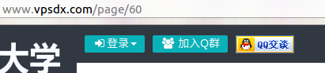
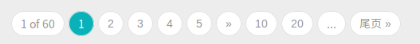
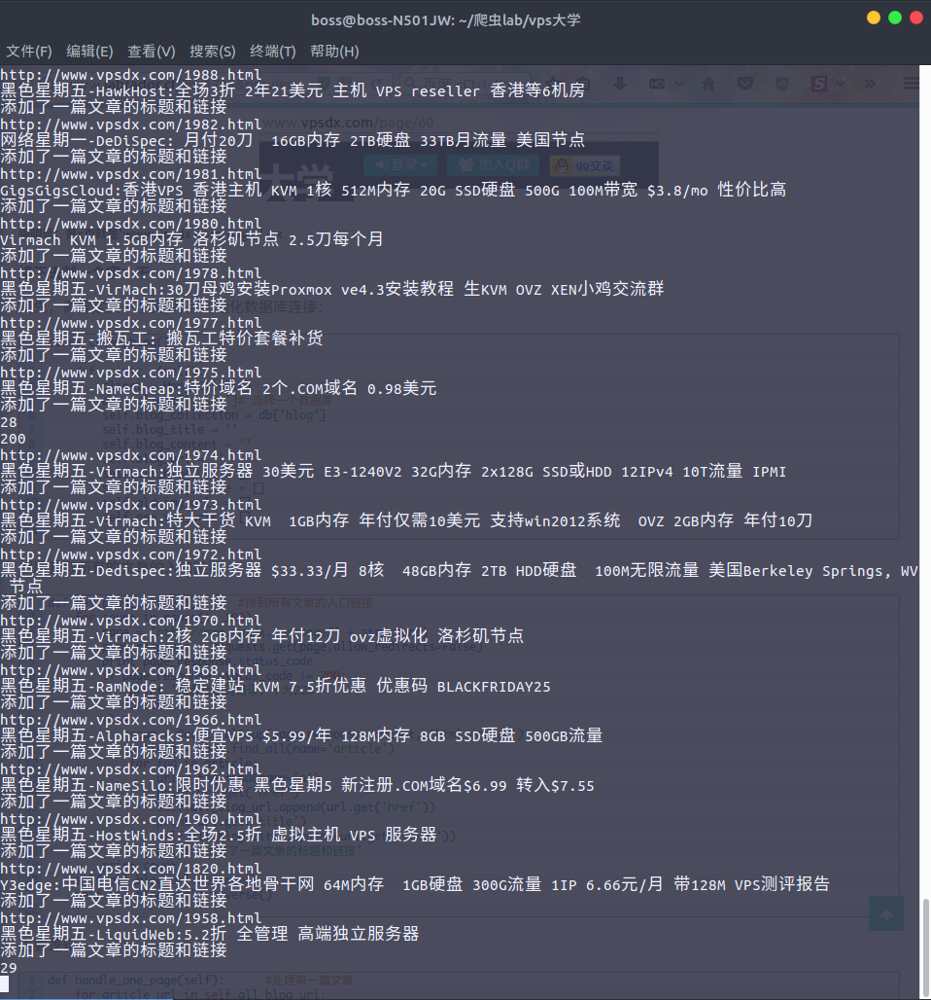
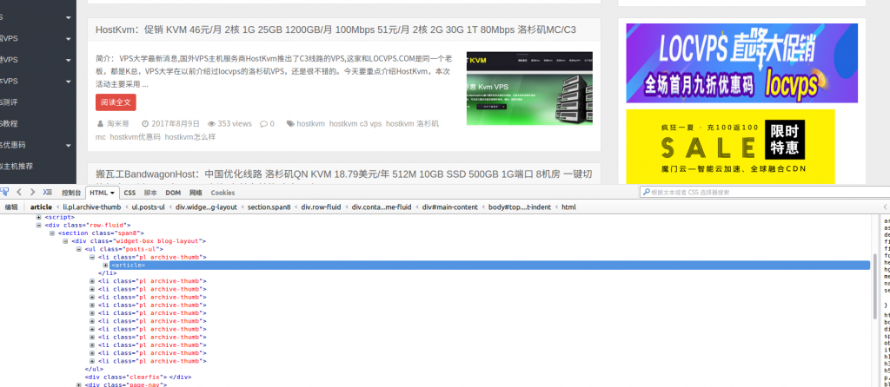

这是一篇去年的老文章了，我的博客的域名从xujh.top->ikeji8.com->xujh.top，建站程序从wordpress变为了typecho静态博客。最近，我将把之前的文章慢慢迁移过来
最近我的博客新开了，一直在申请Google AdSense， 结果申请一次被拒一次，google发邮件说我的内容太少了， 这就让我很不爽了，虽然被拒绝的原因可能是其他的比如网站建站时间短等等，但是我还是想瞬间把我的博客的内容给增加上去，再一看，群里那些基友用的都是wordpress建站，OK，造个小爬虫吧！ 虽然网上有自动采集文章的插件，但是你不觉得那个太low了吗！(虽然我的爬虫也很low) 好了，闲话少说，进入主题。
首先，需要确定一个目标网站，我爬的是xxx大学的博客。
网站分析
先看看我们要爬取的站点
首先，这是一个垃圾站点，请让我鄙视一下。
爬虫运行的步骤：
- 爬取所有文章的入口链接和标题
- 提取每一篇文章中的需要的内容
- 一篇文章爬取结束后将数据写入数据库
- 将需要发布的文章自动发布到WP博客中
开始了，ARE YOU READY！
首先需要找到所有文章链接，我们来分析一下网页的规律


很明显：第x页就是'www.vpsdx.com/page/' + x
接下去就一个字：干
首先，需要定义一个类,
并且初始化数据库连接：这里我用的是mongodb，只因为他简单，适合我这样的小白。
1
2
3
4
5
6
7
8
9
10
11
12class crawl_blog():
def __init__(self):
client = MongoClient()
db = client['vpsdx']# 选择一个数据库
self.blog_collection = db['blog']
self.blog_title = ''
self.blog_content = ''
self.blog_url = ''
self.all_blog_url = []
self.all_blog_title = []
self.old_img_urls = []
self.new_img_urls = []1
2
3
4
5
6
7
8
9
10
11
12
13
14
15
16
17
18
19
20
21def get_blog_url(self): #得到所有文章的入口链接
for count in range(1, 100):
page = 'http://www.vpsdx.com/page/' + str(count)
page_response = requests.get(page,allow_redirects=False)
print page_response.status_code
if page_response.status_code != 200:
print '网页状态码错误，不为200'
break
else:
soup = BeautifulSoup(page_response.content, 'html.parser')
article = soup.find_all(name='article')
for tag in article:
url = tag.find(name='a')
print url.get('href')
self.all_blog_url.append(url.get('href'))
print url.get('title')
self.all_blog_title.append(url.get('title'))
print '添加了一篇文章的标题和链接'
print count
self.all_blog_url.reverse()
self.all_blog_title.reverse()

主要逻辑，这里就不多说了，太简单了。 1
2
3
4
5
6
7
8
9
10
11
12
13
14
15
16
17
18
19
20
21
22
23
24
25
26
27
28
29
30
31def handle_one_page(self): #处理每一篇文章
for article_url in self.all_blog_url:
if self.blog_collection.find_one({'文章网址': article_url}):
print u'这个页面已经爬取过了'
else:
index = self.all_blog_url.index(article_url)
self.blog_url = article_url
print "文章的网址是: {b8c66bcbce874cbcdfdaa03ff0f908635b9ef0379cd01189ad5fe3f67980b247}s" {b8c66bcbce874cbcdfdaa03ff0f908635b9ef0379cd01189ad5fe3f67980b247} self.blog_url
self.blog_title = self.all_blog_title[index]
print "文章的标题是: {b8c66bcbce874cbcdfdaa03ff0f908635b9ef0379cd01189ad5fe3f67980b247}s" {b8c66bcbce874cbcdfdaa03ff0f908635b9ef0379cd01189ad5fe3f67980b247} self.blog_title
self.get_article_content(self.blog_url)
self.change_url() #更改内容中的图片链接
self.blog_content = str(self.blog_content)
self.publish_article(self.blog_title,self.blog_content)
print '成功发表文章'
post = {
'文章标题': self.blog_title,
'文章网址': self.blog_url,
'文章内容': self.blog_content,
'图片旧地址': self.old_img_urls,
'图片新地址': self.new_img_urls,
'获取时间': datetime.datetime.now()
}
self.blog_collection.save(post)
print u'插入数据库成功, 倒计时5s进行下次爬取'
time.sleep(5)
self.blog_title = ''
self.blog_content = ''
self.blog_url = ''
self.old_img_urls = []
self.new_img_urls = []
现在我们分析下如何提取文章中的内容，找到我们需要的标签，发现在标签中还有我们不想要的广告，因此，我们需要对其进行处理，处理方法也很简单，把不需要的tag给去除掉就可以。

1 | def get_article_content(self, url): |
下面这一步也比较重要，每篇文章中有图片链接，基本上很多博客都用了CDN加速，大部分的CDN都提供了防盗链设置，所以，如果直接用原来博客中的链接是行不通的，因为访问图片的时候会需要提供浏览器的refer。所有需要将原文章中的图片下载到本地，并将它上传到自己使用的云存储中，我用的是七牛云。
1
2
3
4
5
6
7
8
9
10
11
12
13
14
15
16
17
18
19
20
21
22
23
24def change_url(self):
self.blog_content = BeautifulSoup(str(self.blog_content), 'html.parser')
#获取所有具有特定class属性的a标签
a_tag = self.blog_content.find_all(name='a', class_='highslide-image')
print 50*'*'
for a in a_tag:
try:
#获取原图的链接并且下载
old_url = a['href']
response = requests.get(old_url)
index = a_tag.index(a)
filename = str(index) + '_' + old_url.split('/')[-1]
with open(filename, 'ab') as f:
f.write(response.content)
self.old_img_urls.append(old_url)
new_tag = self.blog_content.new_tag("img")
a.replace_with(new_tag)
#将图片上传到七牛云
self.up_load(filename, filename)
new_tag['src'] = '你的七牛云域名' + filename
print '成功更换图片的链接'
self.new_img_urls.append(new_tag['src'])
except:
print '获取图片失败，可能是图片的链接错误，正在跳过'
代码写的比较丑，我就不贴出来了。还望各位大胸弟们支持下。
欢迎学习研究Python的朋友们加入：Python技术交流群：681976114